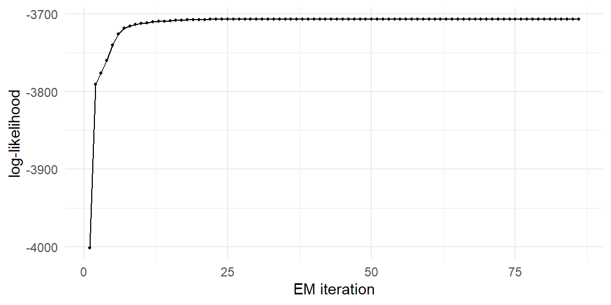
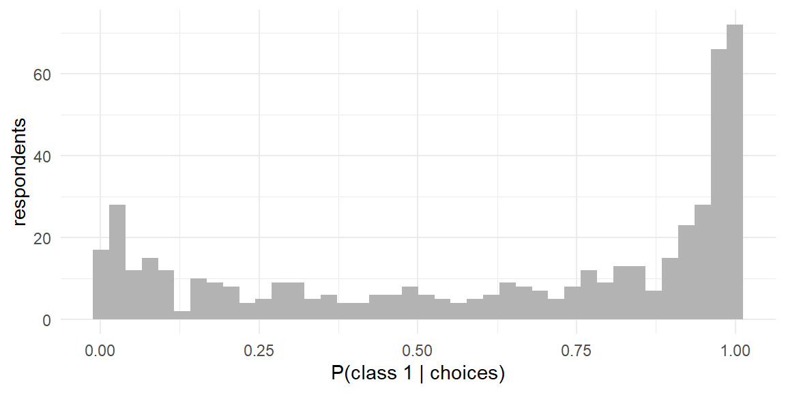

sim_lc_data <- function(N, T, J, beta_list, shares) {
df <- sim_laptop_design(N, T, J) # the @sec-data design generator
X <- model.matrix(~ brand + ram + screen + price, data = df)[, -1]
task_id <- cumsum(!duplicated(df[, c("id", "task")]))
cls <- sample(seq_along(shares), N, replace = TRUE, prob = shares)
beta_row <- do.call(rbind, beta_list)[cls[df$id], ] # each row: its person's class beta
V <- rowSums(X * beta_row)
eps <- -log(-log(runif(nrow(df))))
U <- V + eps
df$choice <- as.integer(ave(U, task_id, FUN = function(u) u == max(u)))
attr(df, "class_assign") <- cls # the answer key
df
}
set.seed(110)
beta_premium <- c(dell = 0.6, apple = 1.5, ram16 = 0.8, ram32 = 1.4,
screen15 = 0.5, price = -0.8)
beta_value <- c(dell = 0.3, apple = 0.2, ram16 = 0.3, ram32 = 0.4,
screen15 = 0.1, price = -2.0)
shares_true <- c(premium = 0.6, value = 0.4)
lc <- sim_lc_data(N = 500, T = 8, J = 3,
beta_list = list(beta_premium, beta_value),
shares = shares_true)11 The Latent Class MNL Model
Every model so far has made an assumption so ingrained you may not have registered it as one: everybody has the same \(\boldsymbol{\beta}\). One price coefficient for the student and the executive, one Apple premium for the designer and the accountant. For the questions that make choice modeling valuable in practice — who is price-sensitive, which segments value which features, how heterogeneous is demand — that assumption is not a simplification; it assumes away the subject.
This chapter introduces preference heterogeneity in its most tractable form: a finite number of unobserved classes, each with its own coefficient vector. The latent class MNL matters for three reasons. Substantively, it is the model behind data-driven market segmentation. Technically, it forces us to confront the panel structure of our data — eight choices per respondent are not eight independent observations once people differ — and the likelihood repair we make here is exactly the one the mixed logit needs in Chapter 13. And algorithmically, it introduces both the EM algorithm and, through the E-step’s posterior class probabilities, this book’s first genuine application of Bayes’ rule — a quiet rehearsal for Part III.
11.1 The Model
Suppose the population consists of \(C\) unobserved classes. A decision-maker in class \(c\) chooses according to a standard MNL with class-specific coefficients \(\boldsymbol{\beta}_c\); the probability that a randomly sampled person belongs to class \(c\) is the class share \(\pi_c\), with \(\sum_c \pi_c = 1\). The model’s parameters stack the shares and all the class coefficient vectors:
\[ \boldsymbol{\theta}= (\pi_1, \ldots, \pi_{C-1}, \; \boldsymbol{\beta}_1, \ldots, \boldsymbol{\beta}_C) \]
Membership is latent — never observed, neither in real data nor (we pretend) in ours. What does the model imply for what we do observe, a person’s whole sequence of choices?
11.2 The Likelihood: Where the Panel Structure Bites
Here is the reasoning, slowly, because a subtle error lurks and nearly everyone makes it once. Condition on person \(n\) belonging to class \(c\): their \(T\) choices are then independent MNL draws (the errors \(\varepsilon_{ntj}\) are still iid), so the probability of their observed sequence \(\mathbf{y}_n = (y_{n1}, \ldots, y_{nT})\) is a product over tasks:
\[ \Pr(\mathbf{y}_n \mid \text{class } c) = \prod_{t=1}^{T} P_{nt}(\boldsymbol{\beta}_c) \]
where \(P_{nt}(\boldsymbol{\beta}_c)\) is the MNL probability (Equation 7.4) of the alternative person \(n\) chose in task \(t\), evaluated at \(\boldsymbol{\beta}_c\). Class membership is unknown, so the unconditional probability of the sequence mixes over classes:
\[ \Pr(\mathbf{y}_n \mid \boldsymbol{\theta}) = \sum_{c=1}^{C} \pi_c \prod_{t=1}^{T} P_{nt}(\boldsymbol{\beta}_c) \tag{11.1}\]
and the sample log-likelihood sums over people:
\[ \ell(\boldsymbol{\theta}) = \sum_{n=1}^{N} \log \left[ \sum_{c=1}^{C} \pi_c \prod_{t=1}^{T} P_{nt}(\boldsymbol{\beta}_c) \right] \tag{11.2}\]
The mixture sits outside the product over tasks. A person is in one class for all eight of their tasks — their choices are linked by shared membership — so we mix sequence probabilities, not task probabilities. The tempting wrong version, \(\sum_{n,t} \log \sum_c \pi_c P_{nt}(\boldsymbol{\beta}_c)\), mixes inside: it describes a different (and rarely intended) world where every person re-rolls their class before every task, and it discards precisely the information that identifies the classes — consistency of behavior within person. One person choosing cheap laptops eight times in a row is strong evidence a price-sensitive class exists; eight scattered cheap choices by different people are not. Getting this hierarchy right is the single transferable skill of this chapter: the mixed logit’s likelihood (Chapter 13) has identical structure with an integral in place of the sum, and the HB models of Part III have it too.
Note what Equation 11.1 also implies: the latent class model breaks IIA at the population level. Each class is an IIA-obeying MNL, but the mixture of them is not — classes with different tastes generate exactly the correlated-across-alternatives behavior that Chapter 10 engineered through nests, now emerging from heterogeneity instead of being specified. This is the first glimpse of a theme that culminates in the mixed logit: heterogeneity is a substitution-pattern engine.
11.3 Simulating Latent Class Data
The story writes the simulator: assign each person a class with probabilities \((\pi_1, \ldots, \pi_C)\), then run the standard MNL simulator of Section 7.6 with that person’s class coefficients. We invent two segments with a familiar marketing flavor — a majority of premium seekers (strong brand and memory preferences, mild price sensitivity) and a minority of value shoppers (weak feature preferences, fierce price sensitivity):
Two implementation notes. The line beta_row <- do.call(rbind, beta_list)[cls[df$id], ] builds a matrix with each row’s own class coefficients by double indexing — person of the row, class of the person — so rowSums(X * beta_row) computes every utility with its correct \(\boldsymbol{\beta}_c\) in one vectorized stroke; this row-specific-coefficients idiom returns in Chapter 13 where every person has their own \(\boldsymbol{\beta}_n\). And the true class assignments ride along as an attribute: unavailable to any estimator, but waiting to grade our posterior classifications later.
A directional sanity check (Section 3.5): true premium seekers should buy more Apples and pricier machines than true value shoppers —
cls <- attr(lc, "class_assign")
chose <- lc[lc$choice == 1, ]
data.frame(
class = c("premium", "value"),
share_apple = round(tapply(chose$brand == "Apple", cls[chose$id], mean), 2),
avg_price = round(tapply(chose$price, cls[chose$id], mean), 2)
) class share_apple avg_price
1 premium 0.49 1.51
2 value 0.34 1.38— and emphatically they do.
11.4 Route 1: Direct Maximization
Nothing stops us from feeding Equation 11.2 to optim(), and it is the honest baseline. Two mechanical matters first.
Constrained shares. The \(\pi_c\) live on the simplex (positive, sum to one). Rather than constrain the optimizer (the Chapter 10 approach), this time we reparameterize — the other standard trick: optimize unconstrained scores \(a_2, \ldots, a_C\) (with \(a_1 = 0\) fixed) and map them through a softmax, \(\pi_c = e^{a_c} / \sum_l e^{a_l}\). Any real-valued scores yield valid shares, so the constraint simply disappears from the optimizer’s world.1
Per-person likelihoods. Equation 11.2 needs, for each person and class, the log of their sequence probability \(\sum_t \log P_{nt}(\boldsymbol{\beta}_c)\) — our stacked machinery delivers this with one more rowsum(): per-task chosen log-probabilities (the Chapter 8 kernel), then summed within person. And mixing the classes on the log scale is a log-sum-exp with weights — max-shifted, per Section 8.3, because sequence probabilities of \(T = 8\) choices are small enough to underflow when exponentiated carelessly:
persll_mnl <- function(beta, y, X, task_id, id_of_task) {
V <- as.vector(X %*% beta)
Vmax <- ave(V, task_id, FUN = max)
eV <- exp(V - Vmax)
logP <- (V - Vmax - log(rowsum(eV, task_id)[task_id]))[y == 1] # per task
as.vector(rowsum(logP, id_of_task)) # per person
}
loglik_lc <- function(theta, y, X, task_id, id_of_task, n_id, C) {
K <- ncol(X)
a <- c(0, theta[1:(C - 1)])
pi_c <- exp(a) / sum(exp(a))
betas <- matrix(theta[C:(C - 1 + C*K)], nrow = C, byrow = TRUE)
ll_nc <- sapply(1:C, function(c)
persll_mnl(betas[c, ], y, X, task_id, id_of_task)) # N x C matrix
M <- apply(ll_nc, 1, max) # rowwise max-shift
sum(M + log(exp(ll_nc - M) %*% pi_c)) # eq-lc-loglik
}Set up the data objects and maximize, starting — deliberately — from a perturbed neighborhood of the truth; the reason for that charity becomes the next section’s subject:
X <- model.matrix(~ brand + ram + screen + price, data = lc)[, -1]
y <- lc$choice
task_id <- cumsum(!duplicated(lc[, c("id", "task")]))
id_of_task <- lc$id[!duplicated(lc[, c("id", "task")])]
n_id <- max(lc$id)
set.seed(111)
start <- c(0, beta_premium + rnorm(6, 0, 0.3), beta_value + rnorm(6, 0, 0.3))
fit_direct <- optim(start, loglik_lc, y = y, X = X, task_id = task_id,
id_of_task = id_of_task, n_id = n_id, C = 2,
method = "BFGS",
control = list(fnscale = -1, maxit = 500))
pi_hat <- exp(c(0, fit_direct$par[1])); pi_hat <- pi_hat / sum(pi_hat)
round(rbind(truth_premium = beta_premium, est_class1 = fit_direct$par[2:7],
truth_value = beta_value, est_class2 = fit_direct$par[8:13]), 2) dell apple ram16 ram32 screen15 price
truth_premium 0.60 1.50 0.80 1.40 0.50 -0.80
est_class1 0.56 1.43 0.69 1.41 0.56 -0.79
truth_value 0.30 0.20 0.30 0.40 0.10 -2.00
est_class2 0.22 -0.02 0.28 0.25 0.01 -2.00round(c(share_class1 = pi_hat[1], truth = 0.6), 3)share_class1 truth
0.629 0.600 Recovery: both coefficient vectors and the 60/40 split, from choices alone — the model heard two voices in the data and transcribed both. (The value class’s small coefficients wobble more; only \(\sim 40\%\) of respondents inform them, and diffuse preferences are intrinsically harder to pin down. The standard errors, if we computed them, would say so.)
11.5 The Terrain: Local Maxima and Label Switching
The charity of a near-truth start hid something important. The latent class log-likelihood is not concave — the global-concavity luxury of the MNL (Chapter 6’s footnote) expired the moment a sum appeared inside the log. Two pathologies follow, one benign, one not.
Label switching is the benign one: swap the two classes’ labels (and their shares) and Equation 11.2 is unchanged — the model is invariant to renaming, so every maximum comes in \(C!\) mirror-image copies. Harmless for fit, confusing for interpretation and for comparing across runs; the standard hygiene is a reporting convention, such as ordering classes by their price coefficient.
Genuine local maxima are not benign. Start the optimizer badly and it can climb to a summit that is not the summit — often one where two classes have collapsed into near-duplicates while a real segment goes unmodeled. Watch it happen; from a start where both classes are the same flat guess:
fit_bad <- optim(c(0, rep(0.1, 12)), loglik_lc, y = y, X = X,
task_id = task_id, id_of_task = id_of_task,
n_id = n_id, C = 2, method = "BFGS",
control = list(fnscale = -1, maxit = 500))
c(good_start = fit_direct$value, bad_start = fit_bad$value)good_start bad_start
-3706.507 -3706.507 Same data, same model, same algorithm, two different answers — and only the log-likelihood comparison reveals which climb ended on the true summit. The defense is the multiple-starts discipline promised in Chapter 6: launch from several dispersed random starts, keep the best, and report having done so. This is not optional garnish for mixture models; it is part of the estimator.
11.6 Route 2: The EM Algorithm
There is a second, beautiful route to the same summit, built from a thought experiment: estimation would be easy if we could see the class labels. Known labels would split the sample into \(C\) subsamples, each fit by an ordinary MNL, with shares estimated by counting. The labels are missing — so the EM algorithm [Expectation–Maximization; see Train (2009), Section 14.3, for the choice-model version] iterates between guessing them probabilistically and estimating as if the guess were data:
Before the two steps, the object that justifies them. If we could see labels, person \(n\) in class \(c\) would contribute \(\log \pi_c + \sum_t \log P_{nt}(\boldsymbol{\beta}_c)\) to a complete-data log-likelihood. We can’t — so EM averages that contribution over our current beliefs about the labels, the weights \(w_{nc}\) defined below, giving the surrogate objective \[Q(\boldsymbol{\theta}) = \sum_n \sum_c w_{nc} \left[ \log \pi_c + \sum_t \log P_{nt}(\boldsymbol{\beta}_c) \right].\] The sum splits cleanly, and each piece hands us one update. The \(\boldsymbol{\beta}_c\) piece is, for each class, exactly a weighted MNL log-likelihood — each person’s tasks entering with weight \(w_{nc}\). The \(\pi_c\) piece, maximized subject to \(\sum_c \pi_c = 1\), gives \(\pi_c = \frac{1}{N}\sum_n w_{nc}\) — the familiar “observed shares are the MLE of category probabilities,” with soft counts in place of hard ones. And maximizing \(Q\) is what guarantees the log-likelihood itself cannot fall from one iteration to the next.
E-step. Given current parameters, compute each person’s posterior class probabilities. This is Bayes’ rule — making its first working appearance in this book — applied to the question “given what this person chose, which class are they in?”. Two lines get us there. The probability that person \(n\) is in class \(c\) and makes the choices we saw is prior times conditional: \(\Pr(\text{class } c, \mathbf{y}_n) = \pi_c \prod_t P_{nt}(\boldsymbol{\beta}_c)\). Divide by the total probability of what we saw — the joint summed over all classes, which is exactly the person’s likelihood contribution Equation 11.1 — and Bayes’ rule falls out:
\[ w_{nc} = \Pr(\text{class } c \mid \mathbf{y}_n) = \frac{\pi_c \prod_t P_{nt}(\boldsymbol{\beta}_c)}{\sum_l \pi_l \prod_t P_{nt}(\boldsymbol{\beta}_l)} \tag{11.3}\]
Prior share times likelihood of the person’s sequence, normalized — and the denominator is Equation 11.1 itself. Every ingredient is already computed by persll_mnl().
M-step. Re-estimate each class’s \(\boldsymbol{\beta}_c\) by a weighted MNL — every person participates in every class’s estimation, weighted by their membership probability \(w_{nc}\) — and re-estimate shares as average memberships — both updates read directly off \(Q\). The weighted MNL is our Chapter 8 kernel with one multiplication added (and its gradient keeps the errors-times-covariates form, weighted):
loglik_mnl_w <- function(beta, y, X, task_id, w_task) {
V <- as.vector(X %*% beta)
Vmax <- ave(V, task_id, FUN = max)
eV <- exp(V - Vmax)
logP <- (V - Vmax - log(rowsum(eV, task_id)[task_id]))[y == 1]
sum(w_task * logP)
}
grad_mnl_w <- function(beta, y, X, task_id, w_task) {
V <- as.vector(X %*% beta)
Vmax <- ave(V, task_id, FUN = max)
eV <- exp(V - Vmax)
p <- eV / rowsum(eV, task_id)[task_id]
as.vector(crossprod(X, w_task[task_id] * (y - p)))
}The full algorithm alternates the two steps until the log-likelihood stops improving. EM’s celebrated guarantee — the \(Q\)-maximization argument above: each iteration cannot decrease the log-likelihood, so it climbs steadily — no step sizes, no line searches, no Hessians — though toward whichever summit its start commits it to (EM shares the local-maxima problem; multiple starts still apply).
One junction in the implementation deserves a warning flag before you read it, because it is this chapter’s classic bug site: the E-step’s weights w are per person (\(N \times C\)), but the weighted likelihood consumes weights per task. The mapping runs through id_of_task — the person who owns each task — so the weight vector handed to the M-step is w[id_of_task, c], one entry per task, each task inheriting its owner’s membership probability. Index per-person quantities by the wrong level and nothing errors; the classes simply come out subtly, silently wrong.
em_lc <- function(y, X, task_id, id_of_task, n_id, C,
max_iter = 200, tol = 1e-7) {
K <- ncol(X)
set_ll <- function(betas, pi_c) { # eq-lc-loglik given parameters
ll_nc <- sapply(1:C, function(c)
persll_mnl(betas[c, ], y, X, task_id, id_of_task))
M <- apply(ll_nc, 1, max)
list(ll = sum(M + log(exp(ll_nc - M) %*% pi_c)), ll_nc = ll_nc)
}
## start: perturbed pooled (one-class) coefficients
pooled <- optim(rep(0, K), loglik_mnl_w, gr = grad_mnl_w, y = y, X = X,
task_id = task_id, w_task = rep(1, max(task_id)),
method = "BFGS", control = list(fnscale = -1))$par
betas <- t(sapply(1:C, function(c) pooled + rnorm(K, 0, 0.5)))
pi_c <- rep(1/C, C)
trace_ll <- numeric(0)
for (it in 1:max_iter) {
cur <- set_ll(betas, pi_c)
trace_ll <- c(trace_ll, cur$ll)
## E-step: posterior memberships (rowwise, max-shifted)
lw <- sweep(cur$ll_nc, 2, log(pi_c), `+`)
lw <- lw - apply(lw, 1, max)
w <- exp(lw) / rowSums(exp(lw)) # N x C
## M-step: weighted MNL per class; person weights mapped to tasks
for (c in 1:C) {
betas[c, ] <- optim(betas[c, ], loglik_mnl_w, gr = grad_mnl_w,
y = y, X = X, task_id = task_id,
w_task = w[id_of_task, c],
method = "BFGS",
control = list(fnscale = -1))$par
}
pi_c <- colMeans(w)
if (it > 1 && abs(diff(tail(trace_ll, 2))) < tol) break
}
list(betas = betas, pi = pi_c, w = w, trace = trace_ll)
}set.seed(112)
fit_em <- em_lc(y, X, task_id, id_of_task, n_id, C = 2)
length(fit_em$trace) # iterations used[1] 86round(fit_em$pi, 3)[1] 0.629 0.371round(fit_em$betas, 2) [,1] [,2] [,3] [,4] [,5] [,6]
[1,] 0.56 1.43 0.69 1.41 0.56 -0.79
[2,] 0.22 -0.02 0.28 0.25 0.01 -2.00ggplot(data.frame(iter = seq_along(fit_em$trace), ll = fit_em$trace),
aes(iter, ll)) +
geom_line() + geom_point(size = 0.8) +
labs(x = "EM iteration", y = "log-likelihood")
And the cross-validation that replaces a package check this chapter:2 two algorithmically unrelated routes — quasi-Newton ascent on the raw mixture likelihood versus alternating expectation and weighted fitting — should meet at the same summit:
c(direct_bfgs = fit_direct$value, em = max(fit_em$trace))direct_bfgs em
-3706.507 -3706.507 They do, to several decimals (EM’s classes may arrive label-switched relative to BFGS’s — compare after ordering by price coefficient).
11.7 Choosing the Number of Classes
Reality never announces \(C\). The standard procedure fits a ladder of models and compares information criteria — BIC (Chapter 8) being the conventional choice for mixtures, its stiffer penalty guarding against the mixture’s appetite for spurious classes:
One convention to fix before computing: BIC’s log-sample-size term uses \(N = 500\) — the number of independent units, people, not the \(4{,}000\) tasks. The whole point of this chapter is that tasks within a person are not independent.
set.seed(113)
bic_ladder <- sapply(1:3, function(C) {
if (C == 1) {
f <- optim(rep(0, 6), loglik_mnl_w, gr = grad_mnl_w, y = y, X = X,
task_id = task_id, w_task = rep(1, max(task_id)),
method = "BFGS", control = list(fnscale = -1))
ll <- f$value
} else {
ll <- max(replicate(3, max(em_lc(y, X, task_id, id_of_task,
n_id, C)$trace)))
}
k <- (C - 1) + C * 6
c(C = C, ll = ll, bic = -2*ll + k * log(n_id))
})
round(t(bic_ladder), 1) C ll bic
[1,] 1 -3782.5 7602.4
[2,] 2 -3706.5 7493.8
[3,] 3 -3701.8 7527.9(Note the replicate(3, ...): each ladder rung gets multiple EM starts, per the standing local-maxima discipline.) BIC drops sharply from one class to two — the data insist on heterogeneity — and rises again at three: the third class buys too little fit for its six-plus parameters. The criterion recovers the truth we built in. With real data, expect less clarity, and remember what \(C\) is: an instrument for approximating a heterogeneity distribution, not an ontological claim that exactly two kinds of people walk the earth. If segments are the deliverable, latent class is the model; if the heterogeneity distribution is the deliverable, the discrete approximation with small \(C\) is crude — the observation that opens Chapter 13.
11.8 The Payoff: Posterior Classification
The E-step’s weights are not algorithmic scaffolding; they are the model’s answer to a question clients actually ask: which segment is this respondent in? For each person, \(w_{nc}\) (Equation 11.3) updates the population shares by their observed behavior — eight consistent choices are plenty to sharpen a 60/40 prior into near-certainty:
ggplot(data.frame(w1 = fit_em$w[, 1]), aes(w1)) +
geom_histogram(bins = 40, fill = "grey70") +
labs(x = "P(class 1 | choices)", y = "respondents")
And because this is simulated data, we can grade the classifications against the hidden truth — the attribute smuggled out of the simulator:
map_class <- apply(fit_em$w, 1, which.max)
truth_cls <- attr(lc, "class_assign")
## align labels (EM may have switched them), then score
acc <- max(mean(map_class == truth_cls), mean(3 - map_class == truth_cls))
round(acc, 3)[1] 0.85Roughly 85% of respondents correctly assigned from eight choices each — with the errors concentrated, as Figure 11.2 predicts, among the genuinely ambiguous. This person-level inference-from-behavior is the book’s first taste of its ultimate deliverable; the mixed logit’s continuous version (Chapter 14) and the HB posteriors of Chapter 17 are the same idea with the discrete classes melted into a continuum.
11.9 Key Learnings
- The latent class MNL is a finite mixture: shares \(\pi_c\) and class coefficients \(\boldsymbol{\beta}_c\), with membership unobserved. Population-level IIA breaks automatically — heterogeneity generates flexible substitution without specifying nests.
- The mixture sits outside the product over tasks (Equation 11.1): people keep their class across their whole sequence, and within-person consistency is what identifies the classes. This likelihood hierarchy transfers verbatim to the mixed logit and HB models.
- The likelihood is non-concave: label switching (benign; fix by reporting convention) and genuine local maxima (not benign; fix by multiple dispersed starts — part of the estimator, not garnish). We watched two starts reach two different summits.
- Two routes to the MLE: direct quasi-Newton on the reparameterized mixture likelihood (softmax shares), and EM — Bayes-rule E-step (Equation 11.3), weighted-MNL M-step, monotone log-likelihood ascent. Their agreement at the summit is a two-algorithm validation, stronger than any package check (and the natural package,
gmnl, has decayed — caveat emptor). - The E-step weight plumbing — person-level weights mapped to task-level likelihood terms via
w[id_of_task, c]— is the chapter’s classic bug site: wrong-level indexing fails silently. Watch for the same hazard in every per-person model ahead. - BIC over a ladder of \(C\) values (with multiple starts per rung) recovered the true two classes; treat \(C\) as an approximation device. Posterior memberships classified ~90% of respondents correctly from eight choices — person-level inference, the book’s destination, in its discrete debut.
Both devices — bounded optimizers and reparameterization — appear in this book so you own both. Rules of thumb: reparameterize simplexes and “must be positive” scales (log-parameterize); use
L-BFGS-Bfor simple intervals like the nested logit’s \(\lambda\). Remember that after reparameterization, standard errors for the transformed quantities need the delta method (Chapter 21).↩︎The natural package validation target,
gmnl(Sarrias and Daziano 2017), implements exactly this model (model = "lc"), but its current CRAN version is incompatible with the modernmlogitdata layer and fails even on its own documentation example in a current R session — a useful reminder that unmaintained packages decay. The two-independent-algorithms check used here is, if anything, the stronger discipline.↩︎